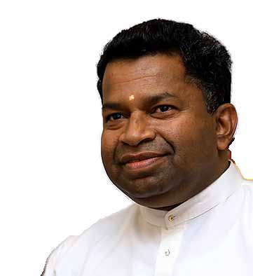
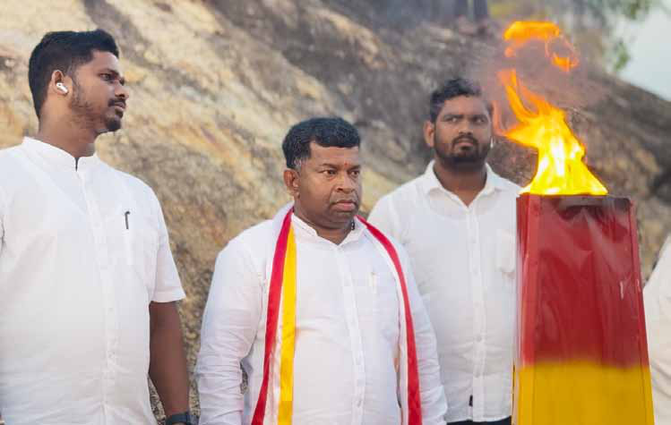
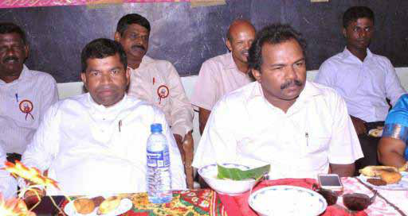

Despite LTTE Leadership's Intent to Destroy Us, We Are Still Rising: Interview with Pillayan
Despite LTTE Leadership's Intent to Destroy Us, We Are Still Rising: Interview with Pillayan
Jaffna Monitor
hellojaffnamonitor@gmail.com
30
Despite LTTE Leadership's
Intent to Destroy Us, We
Are Still Rising:
Interview with Pillayan
We met with Sivanesathurai
Chandrakanthan, also known as Pillayan,
the leader of the Tamil Makkal Viduthalai
Pulikal (TMVP) and the State Minister
for Rural Road Development of Sri Lanka.
His party, TMVP, is at the forefront of
commemorating the Verugal massacre
annually. Below are excerpts from our
interview with him.
Why do you commemorate the
Verugal massacre every year?
It has been 20 years since the Verugal
massacres took place. It is important for us
to reflect on the suffering and sorrow we
endured when fleeing Verugal. The invasion
by the Vanni Tigers, under orders from
LTTE leader Prabhakaran and Intelligence
Wing Chief Pottu Amman, forever changed
BY:
Our Special Correspondent
Interview

Jaffna Monitor hellojaffnamonitor@gmail.com 31 our lives and the political landscape of the East. LTTE leadership, Those who once claimed we were of the same race, declared the Northeast united and called us brothers and sisters, ultimately betrayed and killed us. The pain and agony of the Verugal massacre, along with the momentum it spurred, have shaped us into who we are today. Although the LTTE leadership intended to destroy us, we are still rising, even 20 years later. We remember the Verugal massacre as an event that recalls the pain and suffering of the Eastern fighters and honors those Eastern Tigers who were unjustly killed by the LTTE leadership. Additionally, this commemoration demonstrates that we have overcome the dominance of the Northern Jaffna mindset and have established the distinct identity of the East. What do you mean by the dominance of the Northern Jaffna mindset? I don't blame everyone, but the LTTE leadership had a Jaffna-centric superiority mindset, believing they alone possessed all knowledge. The Eastern Province cooperated with the Northern LTTE, participating diligently in the liberation struggle. However, the Northern leadership believed that the Eastern fighters and people should only listen to their directives. Most people from the North went abroad, leaving us, the Eastern fighters, to keep the liberation struggle alive. I joined the fight in Vanni in 1993. Like me, thousands from the East traveled north to partake in the struggle. We campaigned at every intersection in Kilinochchi, calling out to the youth, 'The enemy has entered our territory, he waits to desecrate our land, so come, join us, let us fight together.' Yet, many Northern youths did not heed the call; instead, they paid agencies to take them abroad. As a result, thousands of Eastern youths were compelled to go north and take up arms. At the Theravil Thuyilum Illam in Kilinochchi, a martyrs' resting place, most of those who lie buried are fighters from the Eastern Province. About 5,000 Eastern provincial fighters have died in the North. Was the LTTE leadership's treatment of us, who left our Eastern homes to fight in the North, justifiable? Was it acceptable? Was it moral? The political approach led by Karuna Amman differs from yours. However, in 2004, Karuna Amman decided that the Eastern Tigers should separate from the Northern Tigers and operate independently. Was this the right decision? Before Karuna Amman decided to split from the main LTTE, He discussed the separation with us. I expressed my view that preserving the aspirations of the Eastern Province was essential. I acknowledged his concerns but emphasized the numerous sacrifices we, eastern fighters, had made for the freedom struggle and ethnic liberation. I cautioned him that if news of this Eastern split were to leak to the media, it could be strategically used against us by the enemy, potentially jeopardizing our quest for ethnic liberation. Therefore, I advised that we must strategically secure what is necessary for the Eastern Province.
Jaffna Monitor hellojaffnamonitor@gmail.com 32 Although Karuna Amman decided to initiate a split, he was not inclined to engage in conflict with the LTTE leadership or the Northern fighters. He believed that LTTE leader Prabhakaran would send a delegation to negotiate, hoping they could eventually reach an agreement. It is my understanding that Karuna Amman did not anticipate Prabhakaran's decision to order an invasion of the East and target Eastern fighters. If Karuna Amman had firmly stood by his decision, we could have made significant changes in the Eastern Province over these 20 years. It is also his fault for not working tirelessly for the decision he made. However, his decision to separate from the mainland LTTE is why the Eastern Province operates independently today. Additionally, his decision saved thousands of eastern provincial fighters. Otherwise, at least another 10,000 eastern fighters would have gone to the North and died. The struggle would have dragged on. In my opinion, if liberation movements are to achieve their stated dreams, they must fight and secure these goals within a specified period. Similarly, military victories must be converted into political successes. These two crucial aspects were absent in the leadership of the Tigers. Therefore, Karuna Amman's decision to split from the mainland LTTE was correct. What types of human rights violations occurred against Eastern fighters in Verugal? On the morning of April 10th, a tragic and brutal attack was carried out by the Vanni Tigers, who invaded Verugal and executed a calculated assault on Eastern fighters. The aggressors surrounded the area, leading to the merciless killing of numerous Eastern fighters. In a particularly egregious violation of human dignity, the bodies of the deceased were left unburied for many days. Furthermore, Pillayan commemorating Verugal massacre victims at an event organized by his political party TMVP on April 10 at Verugal

Jaffna Monitor hellojaffnamonitor@gmail.com 33 the Kathiraveli villagers, who attempted to cremate the bodies, were forcefully sent out at gunpoint, compounding the atrocity with a denial of basic funeral rites. Further atrocities included the neglect of wounded fighters, whose untreated injuries led to death from infection. Reports also surfaced of female combatants being subjected to severe humiliation and physical torture; they were forcibly disrobed and compelled to stand on scorching sand by the Vanni Male Tigers. Additionally, in a chilling betrayal, 18 key commanders, including figures known as Jimkelly Thatha and Robert, were deceitfully summoned under the pretense of a call from leader Prabhakaran. This ruse led to their brutal murder; they were shot, and their bodies callously burned. Why is there a refusal in the North to acknowledge the Verugal massacres, with some even denying that such a massacre ever occurred? During the times of conflict, numerous massacres took place. We remember and commemorate the massacres perpetrated by the Sri Lankan and Indian armies, such as the July 1983 riots, the Kumudini boat massacre, and the Sathurukondan massacre, among others. However, we often overlook the Verugal massacre, a tragic event where Tamils killed fellow Tamils. Most notably, much of the Tamil media behaves as if this massacre never happened. How profoundly unjust is this? Approximately 500 Eastern fighters were slain by the Vanni Tigers during the Eastern split, yet no one questions this. No media outlet reports on it. The media maintains a deceitful silence. We organize this remembrance every year so that future generations will be informed about this massacre. Only then will they truly understand what actually happened, ensuring that they never repeat these fratricidal murders. Pillayan with Karuna Amman - File Photo
